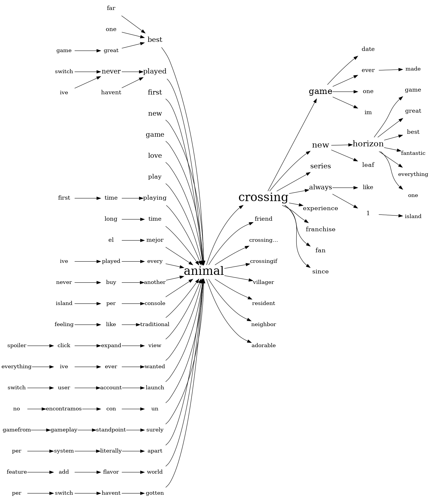
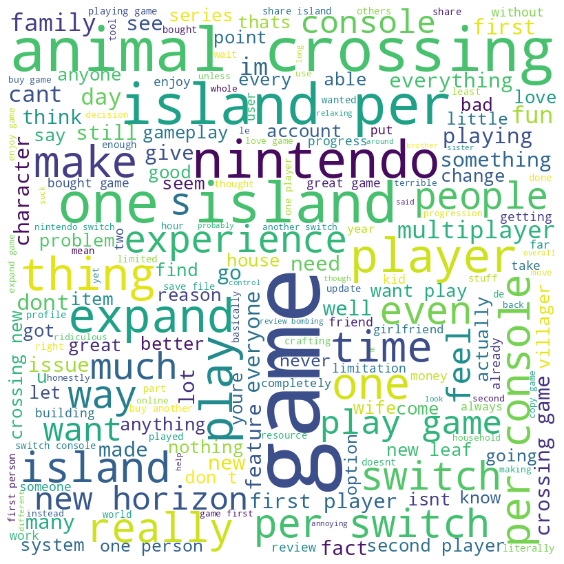
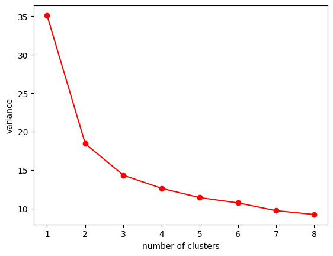
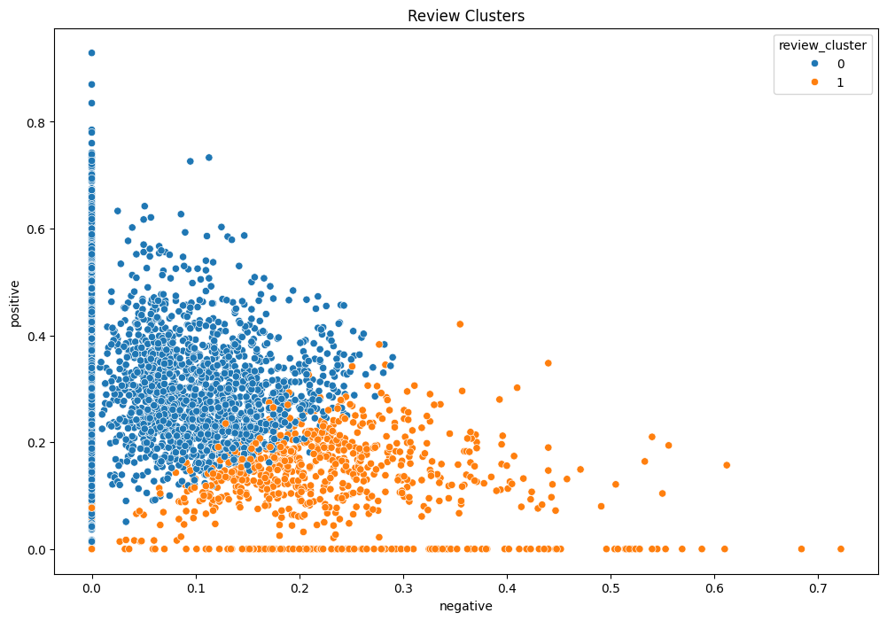

Animal Crossing: New Horizons Reviews Clustering
Zane Hutchens - April 17, 2024Problem
With popular products such as video games, movies, and books, taking in reviews and going through them becomes quite the intensive problem. Reviews contain valuable information like what the audience liked, disliked, and what they thought about the game. This information can drive the next game by making changes based on what the reviews said of the previous, and has the potential to drastically increase sales and reception. However, when you have millions of reviews coming in it's difficult to go through all of them and discern what they have in common. Thats what machine learning and clustering can be helpful. I would like to try and figure out how clustering can be used to cluster reviews and see what they have in common, and extract those commonalities.
KMeans Clustering
The KMeans algorithm is an unsupervised learning algorithm that splits the dataset into a predetermined number of clusters. At the start, the centers (centroids) of each cluster can be one any of the data points in that cluster. After the selection of the first centroids, iteration is done through the data points where each data point is assigned to a cluster based on its distance to it. The distance is usually computed in either Manhattan or Euclidean distance. After assigning a new data point to a cluster, the centroid is recomputed by taking the mean of all of the data points located in the cluster. The assignment and update steps are repeated until one of two conditions are met: the centroids no longer change signifcantly, or iteration ends.
Dataset
I retrieved this Animal Crossing review dataset from Kaggle. It contains two files I was primarily interested in. One of the files contained the reviews of the major critics, such as Forbes, Telegraph, and Pocket Gamer UK. The other file contained user reviews. I concatenated both of the files into one main dataframe of reviews. They both contain who wrote the review, the review text, review date, and score. After concatentation, I had 3106 reviews and 4 columns. The dataset can be found here on Kaggle.
Data Preprocessing
With reviews, data preprocessing becomes a bit of a natural language problem. I used the nltk library to go through each review and remove stopwords, punctuation, and changed it all to lowercase. I also used a lemmatizer to break the words down to their roots. After these steps were completed, I used a sentiment analyzer to give each review a positive, negative, neutral, and compound score. The compound score in this scenario is essentially representing the overarching sentiment of the review. If it is less than zero, the review is more negative, and if it is greater than 0, the review is more positive. With that information, I gave each review a classification of positive or negative based on its compound score.
Visualizations
After preprocessing, I created a word tree and word cloud based on the reviews:

With these two visualizations I planned to look to see if any words are common together. In the word cloud, we can see that the words "island, per, one, switch, animal, crossing" are fairly large, which indicates that they appear very often in the reviews. With the word tree, we can look at the flow of words and see what they can go to.
Clustering
I chose KMeans clustering for clustering due to its simplicity and guarantee of convergence. Further, it is simple to implement and scales very well to large datasets. Finally, the results are easy to interpret and showcase to an audience. Compared to other clustering techinques, such as Agglomerative Clustering, KMeans uses distance to calculate where each data point should be placed, is scalable to large datasets, and has a linear time complexity which is makes it computationally inexpensive. However, choosing the number of clusters is very subjective and KMeans can be sensitive to outliers in the data. It also assumes that all clusters have equal variance which is not always the case.
 With this instance, I chose to use two clusters since thats where the "elbow" of the plot is, which signifies where the variance starts decreasing more slowly. I then used seaborns scatterplot function to plot the clusters based on the negative and positive values.
Storytelling
Looking through the clusters, a lot of the negative reviews have complaints about only be allowed to have one island per switch which does not allow for multiple people to work on their own islands separately, they must work together on a singular island. Additionally, there are a number of complaints about the multiplayer system in the game which include that the game is not very playable, quests are not available, and there is generally not much to do in multiplayer. As for the positive cluster, most reviews in that cluster claim that the game is very relaxing, addicting, and fun to play. Some of the reviews also like how you can play the game at your own pace and slowly build the island from the ground up. As for my initial problem and questions, clustering has exceeded my expectations. The reviews in the negative cluster tended to be similar and complain about the same things, while the positive cluster tended to praise the best aspects of the game.
Impact
I think clustering reviews like this can really help businesses, artists, and developers look at what they need to be updating to improve reception, revenue, and name recognition. Additionally, clustering can be used in other areas as well, which could include major event feedback, student feedback, and public service feedback. By analyzing the common complaints and praises, it becomes possible to look at what is being done correctly and what needs to be adjusted to better suit the needs of the audience.
References
Jesse Mostipak, (n.d.) Animal Crossing Reviews. Kaggle. https://www.kaggle.com/datasets/jessemostipak/animal-crossing